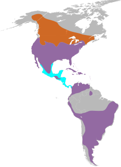

Nomes Populares: Quiriquiri e penereiro-americano.
Atualmente a espécie não está em perigo de extinção.
Classificação Biológica
Dominio: Eukaryota
Reino: Animalia
Filo: Chordata
Classe Aves
Ordem: Falconiformes
Família: Falconidae
Espécie: F. sparverius
Nutrição Geral
Tipo de Nutrição: Heterotrófico.
Os falcões americanos se alimentam principalmente de pequenos animais, como gafanhotos, libélulas, lagartos, ratos, ratazanas e pequenos pássaros. O quiriquiri já foi visto matando cobras, morcegos e esquilos. Este falcão é capaz de manter altas densidades populacionais, pelo menos em parte devido ao amplo escopo de sua dieta. O principal modo de caça do quiriquiri é empoleirando-se e esperando que a presa se aproxime. A ave é caracteristicamente vista ao longo das estradas ou campos empoleirados em objetos como árvores, linhas de energia aéreas ou postes de cerca. Ele também caça pairando no ar com rápidas batidas de asas e explorando o solo em busca de presas. Outras técnicas de caça incluem voo baixo sobre os campos ou perseguição de insetos e pássaros no ar.
As presas costumam ser capturadas no solo, embora ocasionalmente capturem pássaros em voo. Antes de atacar, o quiriquiri balança caracteristicamente a cabeça e a cauda e, em seguida, faz um voo direto em direção à presa para agarrá-la com as garras. Muito parecido com o búteo-de-cauda-vermelha, os falcões americanos conservam energia em uma caçada e escolhem seus ataques com cuidado quanto à posição e chances de sucesso. Durante a época de reprodução, a ave carrega presas grandes de volta para seu parceiro ou filhote. Um estudo descobriu que um par de falcões americanos "forrageava de maneiras que minimizavam os custos de aquisição de energia em sua situação particular". Por exemplo, se a taxa de sucesso na captura de presas diminuir significativamente em uma área particular, a ave se moverá para uma área diferente.
Morfologia
Mede de 23 a 27 cm de comprimento e pesa de 85 a 140 gramas. O macho é cinza azulado no alto da cabeça e asa, enquanto as costas e a cauda são marrom avermelhado, finamente estriadas de negro. Uma larga faixa negra sub terminal na cauda e ponta branca. As partes inferiores são brancas, com pontos negros no peito e barrigas, mais densos nos lados do corpo. Possui um desenho de lágrima, negra, abaixo do olho; uma outra linha vertical no lado da cabeça e um ponto negro na nuca. A fêmea têm as costas e asas marrom avermelhada, com as estrias negras finas, sem o cinza azulado do dorso do macho ou a faixa negra subterminal na cauda. As partes inferiores são de tom marrom alaranjado claro, com riscos finos, verticais e negros, sem o padrão de pontos do macho. O desenho e cores da cabeça são iguais. Os filhotes já saem do ninho com a plumagem do sexo correspondente.
Comportamento
Os falcões-americanos no Canadá e no norte dos Estados Unidos normalmente migram para o sul no inverno, às vezes indo até a América Central e o Caribe. Os pássaros que se reproduzem ao sul de cerca de 35 ° de latitude norte geralmente são residentes o ano todo. A migração também depende das condições climáticas locais. A escolha de habitat dos peneireiros no inverno varia de acordo com o sexo. As fêmeas são encontradas em áreas abertas com mais freqüência do que os machos durante a estação não reprodutiva. Uma explicação comum para esse comportamento é que as fêmeas que são maiores do que os machos chegam primeiro ao habitat preferido e excluem os machos de seu território. O quiriquiri não tem vida longa, com uma vida útil de < 5 anos para as aves selvagens. A ave selvagem anilhada mais velha tinha 11 anos e 7 meses, enquanto os falcões em cativeiro podem viver até 14-17 anos. Em um estudo, humanos foram responsáveis por 43,2% das 1.355 mortes relatadas, que incluíram mortes diretas e atropelamentos, enquanto a predação (incluindo por aves de rapina maiores) foi responsável por 2,8%. Esta estatística é provavelmente tendenciosa, no entanto, uma vez que as mortes relatadas são geralmente encontradas perto ou em áreas habitadas por humanos.
Ocorrência
Os falcões-americanos são encontrados em uma ampla variedade de habitats, incluindo pastagens, pradarias, desertos e outras regiões abertas a semi-abertas. Eles também podem ser encontrados em áreas urbanas e suburbanas. O habitat de um quiriquiri deve incluir poleiros, espaços abertos para caça e cavidades para nidificação (sejam naturais ou artificiais). O quiriquiri é capaz de viver em condições muito diversas, indo desde acima do Círculo Polar Ártico, até os trópicos da América Central, a altitudes de mais de 4,500 m (14,800 ft) na Cordilheira dos Andes. A ave é distribuída desde o norte do Canadá e Alasca até o extremo sul da América do Sul, a Terra do Fogo.
Mapa de Ocorrência

Reprodução
Época de Reprodução: O quiriquiri geralmente se reproduz na primavera e no verão, que são estações mais quentes e propícias para a nidificação e criação dos filhotes.
Ninho: Eles constroem seus ninhos em cavidades de árvores, buracos em rochas ou até mesmo em estruturas humanas, como em telhados ou torres abandonadas.
Incubação: A fêmea é responsável pela incubação dos ovos, que geralmente são de 3 a 6 por ninhada. Ela fica no ninho durante esse período para manter os ovos aquecidos até a eclosão.
Cuidado com os filhotes: Tanto o macho quanto a fêmea participam ativamente do cuidado com os filhotes. Eles alimentam os filhotes com presas que capturam, como pequenos pássaros, roedores e insetos.
Desenvolvimento dos filhotes: Os filhotes de quiriquiri nascem altriciais, ou seja, nascem nus e cegos, dependendo inteiramente dos pais para alimentação e proteção nos primeiros dias. Com o tempo, desenvolvem penas e começam a se preparar para sair do ninho.
Independência: Após algumas semanas, os filhotes começam a sair do ninho e aprendem a voar gradualmente. Os pais continuam a alimentá-los e ensiná-los a caçar até que se tornem independentes.